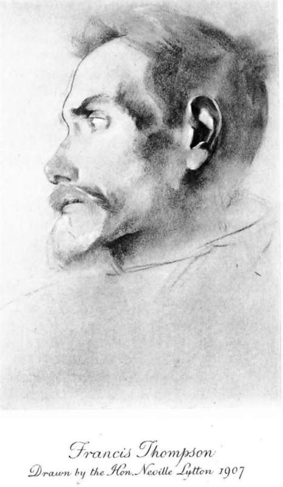

The Closing Years. Part 4
Description
This section is from the book "The Life Of Francis Thompson", by Everard Meynell. Also available from Amazon: The life of Francis Thompson.
The Closing Years. Part 4
" Remember the new Athenceum dodge testifies against you."
It was he who found time to be pleased with Brearley's bowling or merry with the anticipation of the morrow; he, sitting in grey lodgings, who crowded into the chilly ten minutes before 3 A.M. the writing of a long letter to be posted, after anxieties with address and gum of which we know nothing, and a stumbling journey down dark stairs, in a pillar box still black in threatening dawn. There are few such journeys of my own I can count to my credit, and few words I can remember, written or spoken, to set against his thronging puns and his constant sequence of "Yours ever." At any rate he was outdone at every turn-in kindness, attentions, sallies, patience and wit-by one among his friends, my father, who had to crowd his generosity to the poet between stretches of persistent overwork, the real thronging anxieties that were at least as pressing as Francis's imaginary ones. In reading a series of letters Francis wrote to me in the last years, I am sorry to think how slovenly must have been my response to his tenacious jesting. And it was he who troubled to make his notes kind and acceptable, neat and long. One marvels, among the mass of his journalism and letters, at the estimate of him that passed undisputed during his life, as a man who misspent his powers and wasted his minutes as he wasted his matches. If he was unfortunate, he was also merry. Without excuse his biographer confesses to the moodiness, the silence, the disorderliness that is imputed to the poet. The consolation for all my family is the thought of my father's incessant care for and good humour towards him.
Of the hours he kept there are many legends, all made according to Greenwich time. But it is not expected of the lamp-lighter, or the contract-winder of office clocks, or the milkman, that he should write Thompson's poetry, or even read it, and yet we started with a wholly illogical desire of constraining Francis, if not to fulfil their duties, at least to be a party to their punctuality.
Mr. Orpen desired to paint him; sittings were even appointed; but not till Mr. Neville Lytton found him under the same roof, at Newbuildings, was his elusive likeness caught by an artist.
To look at, as it happens, he was something between a lamp-lighter and a man of letters, but nearer the lamplighter ; unless, seeing him stand beneath a street gas-jet to write an overdue article, one noticed he carried a pencil instead of a pole. Thus were the flares of Brown's bookstalls in Bishop's Road used by him. On and on would he write until the last shutter was closed and the gas turned down. Then dashing off the final sentence, he would rush into the shop to sell his book, and to the pillar-box with his article.
If he is to be sought for among the old masters, it is to El Greco that one would go. He had the narrow head and ardent eye that served that painter for Saint, Beggar, and Courtier. None other recalls his presence to me, or creates an atmosphere in which he could have lived. Rembrandt's was too rich and still, Tintoretto's too invigorating. Titian recognised no such pallor, Giorgione no such slightness, and Veronese no such shabbiness. For the Florentines, they were better built; their poets' countenances were more established and secure, and their excellent young men were less nervous and restless than he.
He alludes in a letter to a belief (principally, I believe, his own) that he resembled two Personages :-
" Dear Ev.,-Character counts, even in cricket. This morning I was looking at a Daily Mail photo, of the South African team for the coming cricket season. One of the faces instantly caught my eye. ' Well!' said I, ' if character count for anything in cricket, this should be the bowler they say has the Bosanquet style.' . . . Since Hall Caine is no Shakespeare, Plonplon no soldier, and neither the Tsar nor the Prince of Wales [George V] are Thompsonian poets, great was my surprise when I found the fellow was the Bosanquet bowler."
Had he compared his own youthful photographs with those of the present Prince of Wales he might perhaps have been confirmed in one of his impressions.
The only faces he much pondered were the poets'. Round the walls of his room he pinned the Academy supplements, full-page reproductions from the National Portrait Gallery; and with these was a reproduction given him by Coventry Patmore of Sargent's drawing of A. M. The supplements he liked all the better because they illustrated a favourite theory of facial angles. On foreheads he set no value; but insisted that genius was most often indicated by a protruding upper jaw. This did not mean for him that thick lips had significance, but where the bony structure from the base of the nose to the upper teeth was thrust forward, as, notably, in Charlotte Bronte and Coventry Patmore, he found the character that interested him.
His Letters
" I had never your lightness of heart," he writes,
Here is another letter, written in a bad light but copious good spirits, before a visit to "the Serendipity Shop" :-
" Dear Ev.,-This to remind you I shall be at the shop, whereof the name is mystery which all men seek to look into, and in the mouth of the young man Aloysius doubtful is the explanation-yea, shuffleth like one that halteth by reason of the gout; in the forehead and forehand of the bland and infant day, yet swaddled in the sable bands of the first hour and the pre-diluculum. For the Wodensday, a kitten with its eyes still sealed, is laid in the smoky basket of night, awaiting the first homoeopathic doses of the morn's tinctured euphrasy (even as euphrasia once cured an inflammation of my dim lid)."
Mr. Andrew Lang has complained of de Quincey's digressions; a further sample of F. T.'s habitual guiltiness may be taken from one of the slightest of his notes:-
Continue to: